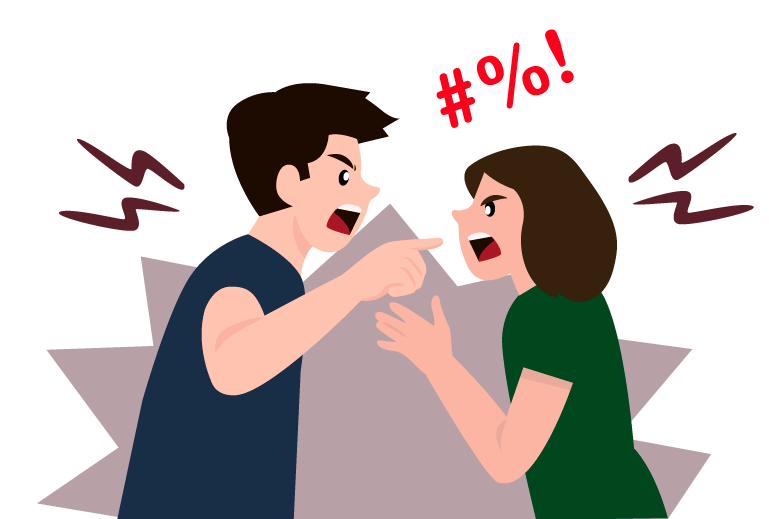
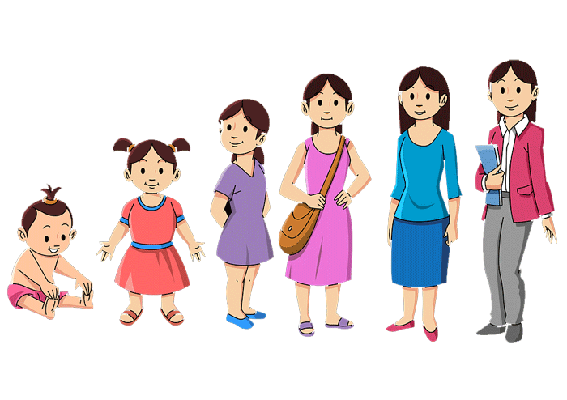
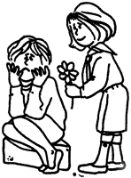

No podemos permanecer indiferentes ante la ausencia de Paz en nuestra
vida, en la familia, en la sociedad, en nuestra Patria. La promoción
de la Paz es una responsabilidad de todos.
En la Exhortación Pastoral
del Episcopado Mexicano, "Que en Cristo Nuestra Paz México tenga vida
digna", sobre la misión de la Iglesia en la construcción de la paz
para la vida digna del pueblo de México, en el número 188 hacen una
invitación a no permanecer dormidos ante la situación de ausencia de
Paz que vive nuestra Patria: "El dolor de las víctimas inocentes, el
sufrimiento, la perplejidad, el egoísmo, y la indiferencia, que la
inseguridad y la violencia dejan en las familias y comunidades de México,
traen a nuestro corazón el eco de las palabras del apóstol: «Ya es hora
que despertéis del sueño. La noche va pasando, el día está encima,
despojémonos, pues, de las obras de las tinieblas y revistámonos de la
luz. Andemos como en pleno día, con dignidad» (Rom 13,Ib. 12-13a)".
Para este momento se ofrecen tres propuestas para convertirnos en
promotores de Paz.
1. Fortalecer la oración personal y comunitaria. Pedir constantemente a
Dios el don de la Paz.
La paz es un don de Dios, por lo tanto, una primera acción para cultivar
este don es la oración. Hay que pedir a Dios constantemente que nos dé el
don de la paz. Este compromiso de oración debe ser personal y comunitario.
Los obispos en México invitan continuamente a toda la comunidad católica a
realizar jornadas de oración por la paz.
La primera propuesta es intensificar nuestra oración personal y comunitaria
para pedir al Señor el Don de La Paz.
Junto con la oración personal, que seguramente ya hacemos, podemos involucrar
a las demás personas para hacer oración a Dios nuestro Señor. Por ejemplo,
podemos motivar a los demás miembros de nuestra familia para que, al menos una
vez a la semana, hagamos oración en familia para pedir por nuestras necesidades
y por La Paz en cada miembro de la familia toda la familia con los vecinos en
nuestra comunidad o barrio.
Además de la oración familiar, es posible también involucrar a los vecinos.
Promover un día en la semana en el que se puedan reunir en algún lugar, identificar
allí algunos minutos para la oración comunitaria pidiendo a Dios el don de La Paz.
Se trata de una acción sencilla pero que nos haga conscientes de esta necesidad de
orar juntos por la Paz.
También sería muy conveniente en nuestra comunidad parroquial o en la capellanía
promover, al menos una vez al mes, una jornada especial de oración por la Paz.
Siempre unidos a los sacerdotes responsables e invitando a reunirse a todos los
grupos y personas de la comunidad.
2. Crecer humana y espiritualmente para aprender a resolver los conflictos que
vivimos día a día.
Es necesario esforzarnos por nuestro crecimiento humano y espiritual para poner
en práctica la enseñanza de Jesús de "bienaventurados los que promueven la Paz,
porque serán llamados hijos de Dios" Convertirnos en promotores de paz a través
de buscar siempre solucionar positivamente los conflictos que día a día se hacen
presentes en nuestra vida. Es imposible querer 15 una vida sin conflictos. Es por
eso por lo que, además de pedir a Dios el don de la Paz, proponemos conocernos,
crecer humana y espiritualmente y conocer también cómo y por qué se dan los
conflictos y algunas estrategias para poder resolverlos positivamente. También es
necesario identificar cuándo un conflicto no se va a resolver de manera favorable
y entonces buscar la solución menos negativa.
Presentamos un artículo que nos ayude a profundizar este compromiso. (Tomado de:
Balderas Rangel Octavio, El lado humano de las Bienaventuranzas, MABA, Guadalajara,
México, 2015, pp. 107-118).
La resolución de conflictos
Otra acción que podemos realizar para cultivar la paz es
aprender a resolver los conflictos que en el cotidiano vivir encontramos día a día.
Señalamos algunos elementos que nos ayuden a conseguir esto.
El origen de los conflictos.
Lo primero que hay que considerar es el origen de los conflictos que se encuentra en la condición vulnerable de la humanidad. La vulnerabilidad humana requiere de un amplio repertorio de satisfactores que responden a un amplio repertorio de necesidades. La primera causa del conflicto consiste en tener necesidades diferentes con frecuencia incompatibles, por ejemplo, alguien siente mucho calor y necesita
encender el aire acondicionado porque siente mucho calor, pero junto a él hay otro al que le hace daño. Y, junto con esto, la desproporción entre las necesidades de las personas o grupos y los satisfactores disponibles, por ejemplo, tres personas tienen necesidad de un auto y sólo hay un auto disponible. Estos ejemplos que hemos presentado son muy banales. Pensemos cuando las necesidades son mucho mayores y más importantes no solamente para las personas sino para las sociedades y son diferentes necesidades. (Aquí se puede dejar un momento para preguntar si alguien tiene la experiencia de un conflicto por situaciones similares).
Otro aspecto que hay que considerar son los límites mentales propios del ser humano. Es decir, la mente humana tiene una estructura y su funcionamiento limitado, y esto hace que las percepciones generalmente sean pobres y cargadas de interpretaciones subjetivas. Esto significa que nuestra mente, por muy grandiosa que sea, no es capaz de captar la realidad en su totalidad, solamente puede percibir algunos aspectos de la realidad por eso se dice que es pobre la percepción. Y es subjetiva porque en la mayoría de las veces lo que percibimos de la realidad tiene que ver con lo que queremos percibir y no lo que la realidad es, por ejemplo si veo un partido de fútbol en donde mi equipo favorito va perdiendo y el otro equipo está jugando mejor que el equipo al que yo le voy pues entonces, talvez, comenzaré a fijarme solamente en los errores que comete el otro equipo y los engrandeceré, percibiré faltas en donde no las hay o pediré al árbitro que señale un penal cuando éste no existe, por eso decimos que la percepción tambien está cargada de una interpretación subjetiva.
En resumen, no podemos comprender toda la realidad y la
realidad la interpretamos de acuerdo con lo que nosotros queremos
interpretar. Podemos decirlo con la siguiente frase: “cada quien
platica de la feria según cómo le fue en ella”. Y esta realidad hace que
muchas veces caigamos en el peligro de hacer una mala
interpretación o un mal entendido de algún hecho que luego se convierte en un
conflicto.
Un tercer factor de conflictos lo constituye la complejidad de la comunicación
interpersonal. Es fácil entender que, en la medida en la que una persona es
limitada en sus habilidades para comunicarse, en esa misma medida aumentan
sus conflictos con otras personas. Las habilidades para comunicarse suponen la
conciencia de que todos los seres humanos estamos condicionados por la
subjetividad de la percepción y por una cierta subjetividad en el uso de las
palabras. Los buenos comunicadores se preocupan por tratar de tener claro, en
la medida de lo posible, cómo perciben los otros, así como también por aclararse
y aclarar las palabras. Además, han abandonado algunos modos de relacionarse
que generan estrés en sus interlocutores, como, por ejemplo: ordenar, imponer,
amenazar, moralizar, sermonear, dar
cátedra, juzgar, criticar, condenar,
ridiculizar, — avergonzar, — interpretar
adivinando, desviar, hacer bromas cínicas o
fuera de lugar.
La condición vulnerable y necesitada del ser humano, la subjetividad de la
percepción y la complejidad de la comunicación interpersonal, son limitantes
propios de la naturaleza humana y, por lo tanto, son retos universales en la
resolución de conflictos. Sin embargo, existen ciertas características individuales
que acentúan los conflictos y, en ocasiones, impiden una resolución satisfactoria.
Las más frecuentes son:
la postura extrema de “todo o nada”
las actitudes de dogmatismo y de rigidez que impiden “negociar”
la costumbre de “etiquetar” a los demás
polemizar, es decir, luchar para ver quién gana, en lugar de discutir, qué significa “sacudir” para aclarar
dramatizar los
conflictos, es decir, hacer teatro con las dificultades haciéndolas muchas veces
más grandes de lo que son en realidad
dejarse conducir por la propia
emotividad hasta perder la objetividad.

Además, muchos conflictos son originados por un conjunto de creencias o actitudes declaradamente enfermizas como por ejemplo:
el racismo, esto es, la creencia de que determinada raza o cultura es inferior a la propia
la pretensión narcisista de que las demás personas respondan a las propias expectativas
la pretensión de igualar o superar a otras personas, actitud que se conoce como envidia.
Condiciones para resolver los conflictos. Dado que los conflictos son
normales en la vida del ser humano, el pretender negarlos no sólo no los
resuelve, sino que crea un nuevo conflicto que es querer “algo imposible”, es
decir, querer que no existan los conflictos. La negación de un conflicto real hace
que dicho conflicto no se identifique, y esto ya incapacita para resolverlo. Las
causas más frecuentes para negar la existencia de conflictos reales es el miedo a
la confrontación y los mecanismos de defensa, principalmente la negación, la
racionalización, el desplazamiento y la formación reactiva.
La primera condición para resolver en forma positiva los conflictoses entonces aceptar su existencia como algo normal. Esta aceptación de
los conflictos supone también la aceptación de la condición Y
humana, con tantas necesidades y limitaciones que generan
continuamente conflictos. Por lo tanto, la aceptación del
conflicto como algo normal y con frecuencia como
algo positivo en cuanto que forja el carácter,
estimula el desarrollo y promueve el cambio y el
progreso.

Los seres humanos no sólo somos necesitados, sino también diferentes. La capacidad para resolver favorablemente los conflictos supone también la capacidad para aceptar que los demás son diferentes a uno mismo, con ideas distintas a las nuestras, y por lo ramo quienes son constructivos en las situaciones de
conflicto entienden - que - dichas
situaciones, en principio, son
resultado de estas diferencias
individuales, y no de la mala
voluntad de los otros.
la capacidad para resolver en forma positiva los conflictos incluye la "empatía", gracias a la cual la intensión de entender está antes que el intento de defenderse de la Parte con la que no estamos de acuerdo. Supone también la disposición a dialogan asumiendo el riesgo de ser persuadido y, por lo tanto, de ceder y cambiar la propia conducta.
En todo esto se requiere una dosis de sabiduria aplicada a los siguientes aspectos
el enfoque de la solución del conflicto en términos de "ganar-ganar", en lugar de creer que la laca forma para ganar algo es que el otro pierda
combinar adecuadamente la tolerancia con la firmeza asertiva (escuchar al otro y mantenerse firme en las propias ideas) y la resistencia pasiva no destructiva (aguantarse mutuamente y no querer destruir al otro)
la capacidad la encauzar la agresividad en gestos amables, en modo tal que no se caiga en la represión ni en la explosión violenta.
Finalmente, la capacidad para resolver conflictos implica el desarrollo de las habilidades de "negociación":
iniciar sin atacar
escuchar con empatía con el objetivo de integrar las aportaciones de todos
actitud de cooperación
enfatizar los valores comunes
ceder en algo para encontrar un punto intermedio
estar dispuesto a aceptar la opinión de la mayoría
habilidad para mantener el control de las propias emociones mediante ejercicios de relajación, manejo de significados, entre otros
En casos especiales recurrir a la mediación de personas respetadas por las dos partes en conflicto.
Los conflictos sin solución
Existen ciertas características individual. que acentúan los conflictos y, en ocasiones, impiden una solución satisfactoria. Tales características pueden ser simplemente límites personales acentuados o pueden ser situaciones individuales declaradamente enfermizas. Es fácil comprender que la comunicación interpersonal y, sobre todo, la resolución satisfactoria de los conflictos está delimitada por las capacidades o las incapacidades de los individuos.
La convivencia con personas psicológicamente limitadas, esto es, gobernadas por actitudes carentes de objetividad y por pretensiones irrealistas, hace imposible la convivencia justa y serena. Es necesaria una comprensión sabia de estas situaciones para poder aceptar serenamente que habrá conflictos que nunca se resolverán satisfactoriamente. Pretender que los demás den más de lo que pueden, no es una actitud inteligence. Tampoco lo es él creer que nuestra buena voluntad es suficiente para sustituir Las carencias ajenas.
Además de sabiduría es necesaria una gran fortaleza para interactuar de la forma más constructiva posible, al menos, de la forma menos destructiva. En los conflictos sin solución satisfactoria la fortaleza de los constructores de la paz se manifiesta con una gran capacidad dc tolerancia a la frustración, misma que los habilita para buscar alternativas "saludables" ante lo inevitable.
Las consideraciones hechas sobre la resolución de conflictos permiten comprender que los constructores de la Paz poseen una personalidad sana y rica de cualidades. Ser constructor de la Paz supone un proceso consciente de desarrollo personal, que haga posible actitudes constructivas, aún cuando se encuentre en situaciones desventajosas.
La construcción de un ambiente de bienestar y felicidad
La Paz bíblica incluye un conjunto de características que comprende el bienestar físico, tanto en lo que se refiere a la abundancia de bienes como a La salud corporal, capacidad de entendimiento y triunfo sobre los enemigos, bienes todos estos que generan la conciencia de poseer una existencia personal íntegra, en armonía con todo cuanto rodea, teniendo como resultado una condición de seguridad, tranquilidad, bienestar y felicidad. Ser constructor de la Paz supone tener actitudes y conductas que favorezcan, en lo posible, esta situación de plenitud humana en el ambiente que le rodea.
Desde esta perspectiva el constructor de la Paz aparece como una persona rica de cualidades humanas. Esta riqueza personal puede apreciar mejor a La luz de su contrario, esto es, a la luz de las características de quienes acostumbran arruinar el bienestar común. En las características de estas personas resaltan la actitud comodina y la falta de colaboración, así como el carácter depresivo, negativo o conflictivos
La fisonomía del constructor de la Paz está constituida por las características del pobre de espíritu, permeadas de sencillez, de los mansos, permeadas por el trato amable y de los misericordiosos, permeadas de empatía y de solicitud por las necesidades ajenas. Este conjunto de características, de por sí, es suficiente para entender cómo se conduce el constructor de la Paz, sin embargo, conviene añadir su capacidad para resolver en forma positiva los conflictos y su disponibilidad para colaborar en todo lo que sea necesario pata convivir, incluyendo su buen humor.

Los constructores de la Paz nos muestran la fusión que existe entre desarrollo personal y capacidad de amar.
La dicha de los constructores de la Paz
Desde el punto de vista humano los constructores de la Paz tienen un poderoso motivo para ser felices: el ambiente positivo y rico en relaciones interpersonales en el cual viven. Esta es una característica de las personas felices.
Los problemas de la relación nunca faltan en la vida humana, pero es posible afirmar que los constructores de la Paz son las personas que tiene menos problemas de relación. Se puede decir que, salvo raras excepciones, sólo tienen problemas con personas conflictivas de escasa inteligencia social. Pero, aún en estos casos, su reacción es sabia al menos por la siguientes razones
Saben hasta dónde puede llegar la comunicación y no pretenden más, pues saben que sería inútil, y no están dispuestos a perder tiempo ni a gastar energías en intentos inútiles
No permiten que las actitudes pesimistas, competitivas, agresivas o cínicas de otras personas contaminan su estado emocional
Responden inteligentemente cuando su prójimo trata de involucrarlos en juegos psicológicos
Por otra parte, cuando los constructores de la Paz se encuentran o interactuan con otras personas igualmente constructivas, entonces pueden gozar de relaciones verdaderamente valiosas. Este gozo es del todo desconocido para las personas problemáticas y de escaso talento social
Los sabios, los santos y los psicólogos han señalado que la causa más profunda de la felicidad es la consciencia que un individuo tiene de sus propias virtudes y fortalezas. Los constructores de la Paz poseen un rico conjunto de habilidades o virtudes que explican su capacidad en la resolución de conflictos y en la construcción de un ambiente nutricio
Concluimos diciendo que una de las causas que provocan la dicha lo constituyen las propias capacidades de relación interpersonal. Saber comunicarse y negociar es un arte, y el constructor de la Paz es un artista de la comunicación. Este tipo de dicha también es desconocido para quienes carecen de habilidades para relacionarse sanamiente con sus semejantes
Comprometerse en acciones sociales que promueven la Paz
Junto con la oración personal y comunitaria y con nuestro crecimiento humano y espiritual para aprender a resolver conflictos, es indispensable también comprometernos a participar en acciones sociales que promueven la Paz
La tercera propuesta de compromiso es buscar participar en alguna organización de la sociedad civil que promuevan la Paz. O también reunirse con los vecinos para ver cómo solucionar los problemas comunes. O promover en nuestra parroquia algunas iniciativas para fortalecer la Paz. Tenemos que dejar de ser indiferentes ante nuestra ausencia de Paz, es necesario que despertemos del sueño y que nos pongamos a trabajar en favor de la Paz porque: bienaventurados los que promueven la paz, porque serán llamados hijos de Dios.
ORACIÓN FINAL
Se concluye con el canto de la oración de San Francisco de Asís, Hazme un instrumento de tu Paz.
Hazme un instrumento de tu paz,
donde haya odio, lleve yo tu amor,
donde haya injuria, tu perdón Señor,
donde haya duda, fe en Ti.
Hazme un instrumento de tu paz,
que lleve tu esperanza por doquier,
donde haya oscuridad lleve tu luz,
donde haya pena, tu gozo, Señor.
Maestro, ayúdame a nunca buscar, quierer ser consolado sino consolar;
quiere ser entendido, sino entender,
ser amado como yo amar.
Hazme un instrumento de tu paz,
Es perdonando que nos das perdón
Es dando a todos lo que Tú nos das
Muriendo es que volvemos a nacer
Maestro, ayúdame a nunca buscar, quierer ser consolado sino consolar;
quiere ser entendido, sino entender,
ser amado como yo amar.
Hazme un instrumento de tu paz.


 Otro aspecto que hay que considerar son los límites mentales propios del ser humano. Es decir, la mente humana tiene una estructura y su funcionamiento limitado, y esto hace que las percepciones generalmente sean pobres y cargadas de interpretaciones subjetivas. Esto significa que nuestra mente, por muy grandiosa que sea, no es capaz de captar la realidad en su totalidad, solamente puede percibir algunos aspectos de la realidad por eso se dice que es pobre la percepción. Y es subjetiva porque en la mayoría de las veces lo que percibimos de la realidad tiene que ver con lo que queremos percibir y no lo que la realidad es, por ejemplo si veo un partido de fútbol en donde mi equipo favorito va perdiendo y el otro equipo está jugando mejor que el equipo al que yo le voy pues entonces, talvez, comenzaré a fijarme solamente en los errores que comete el otro equipo y los engrandeceré, percibiré faltas en donde no las hay o pediré al árbitro que señale un penal cuando éste no existe, por eso decimos que la percepción tambien está cargada de una interpretación subjetiva.
Otro aspecto que hay que considerar son los límites mentales propios del ser humano. Es decir, la mente humana tiene una estructura y su funcionamiento limitado, y esto hace que las percepciones generalmente sean pobres y cargadas de interpretaciones subjetivas. Esto significa que nuestra mente, por muy grandiosa que sea, no es capaz de captar la realidad en su totalidad, solamente puede percibir algunos aspectos de la realidad por eso se dice que es pobre la percepción. Y es subjetiva porque en la mayoría de las veces lo que percibimos de la realidad tiene que ver con lo que queremos percibir y no lo que la realidad es, por ejemplo si veo un partido de fútbol en donde mi equipo favorito va perdiendo y el otro equipo está jugando mejor que el equipo al que yo le voy pues entonces, talvez, comenzaré a fijarme solamente en los errores que comete el otro equipo y los engrandeceré, percibiré faltas en donde no las hay o pediré al árbitro que señale un penal cuando éste no existe, por eso decimos que la percepción tambien está cargada de una interpretación subjetiva.